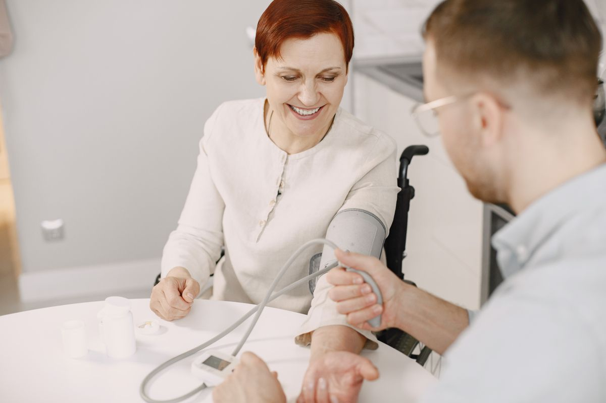
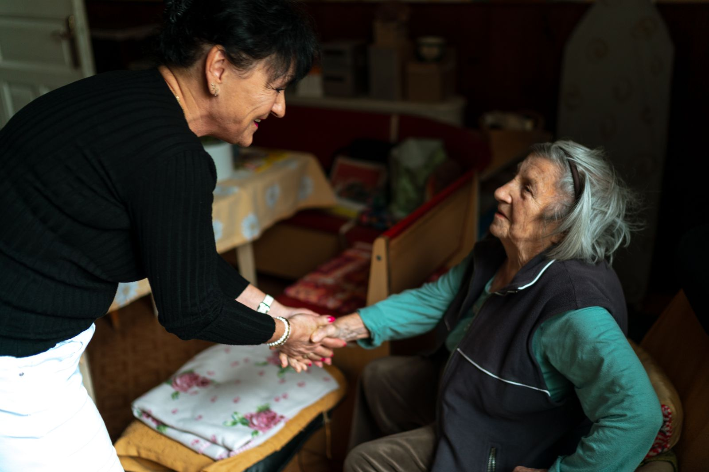

Tell us what you need.
Call our Antelope Valley office to discuss home health services and your care needs.
Skilled nursing, rehabilitation and everyday support, delivered in your own home by a caring professional team.
The home health service with a heart.

OUR APPROACH
Vista Home Health Services, Inc. brings together highly trained, caring nurses, physical therapists, speech therapists, occupational therapists, social workers and home health aides. From simple procedures to complex therapies, services are provided according to your diagnosis and physical needs.
“Our goal is to do whatever we can to enable you to stay in your home and assist you to become as independent as possible.”THE VISTA HOME HEALTH GOAL
CARE & SERVICES
From clinical treatment to help with daily activities, our services respond to your diagnosis and physical needs. Select a service to learn more.
Skilled nursing covering wound care, IV treatment, post-surgical care, and comprehensive disease management; laboratory services including lab draws and routine diagnostic sampling.
Includes lab draws and routine diagnostic sampling.
Highly trained physical, occupational and speech therapists visit your home. The duration and frequency of visits depend on medical necessity and a physician's order.
Development and restoration of muscle and joint function.
Regaining skills needed for self-care, including dressing and grooming.
Assistance with communication difficulties, swallowing problems and alternative ways to express your needs and feelings.
Caring, trained, certified home health aides assist with bathing, grooming, incontinence care, light housekeeping and activities of daily living.
Not sure where to start? Call us to discuss your needs

Care begins with a connection.HOME HEALTH COORDINATION
Direct collaboration with physicians, hospitals, and rehabilitation facilities to deliver seamless, coordinated care tailored to individual patient needs.
GETTING STARTED
Whether you're exploring care for yourself, someone you love or a patient, our office can help you understand the next step.
Call our Antelope Valley office to discuss home health services and your care needs.
Our team coordinates with your physician and care providers. Home rehabilitation requires medical necessity and a physician's order.
Home visits are planned around your needs.
WE'RE HERE TO HELP
Our 24/7 answering service is available around the clock, including weekends and holidays.
HELPFUL INFORMATION
Vista Home Health Services, Inc. does not deny services or discriminate on the basis of race, sex, age, religion, marital status or disability. The brochure references Title VI of the Civil Rights Act of 1964, Section 504 of the Rehabilitation Act of 1973 and the Age Discrimination Act of 1975.
The agency brochure lists accreditation by the Joint Commission on Accreditation of Healthcare Organizations. Please contact the office for current accreditation information.
Social servicesHelp finding financial resources, meal delivery and community support groups.View details
Our social services help locate financial resources and community assistance, including home meal delivery and support groups.